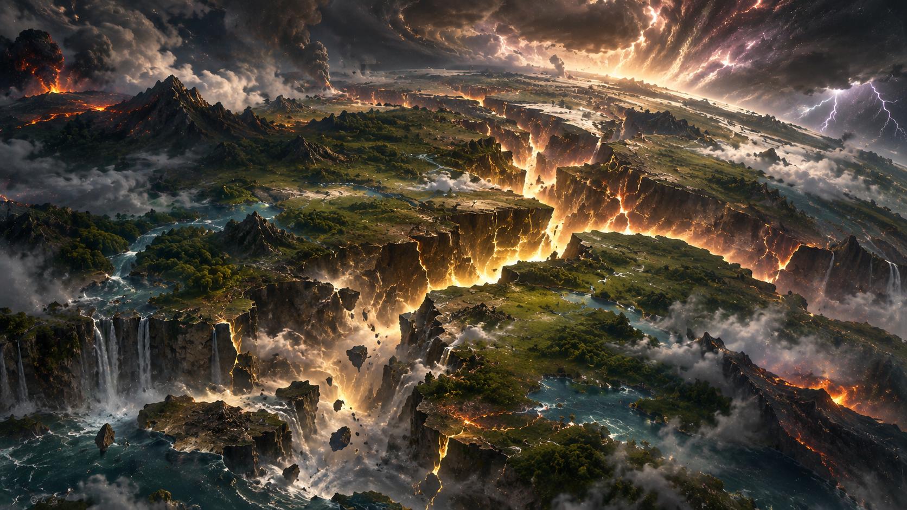
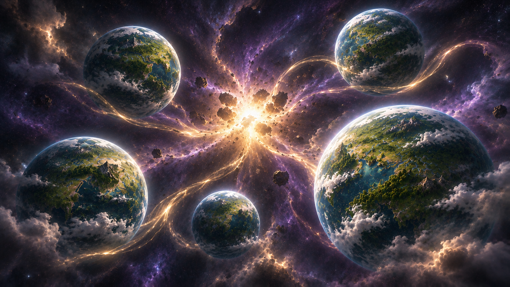
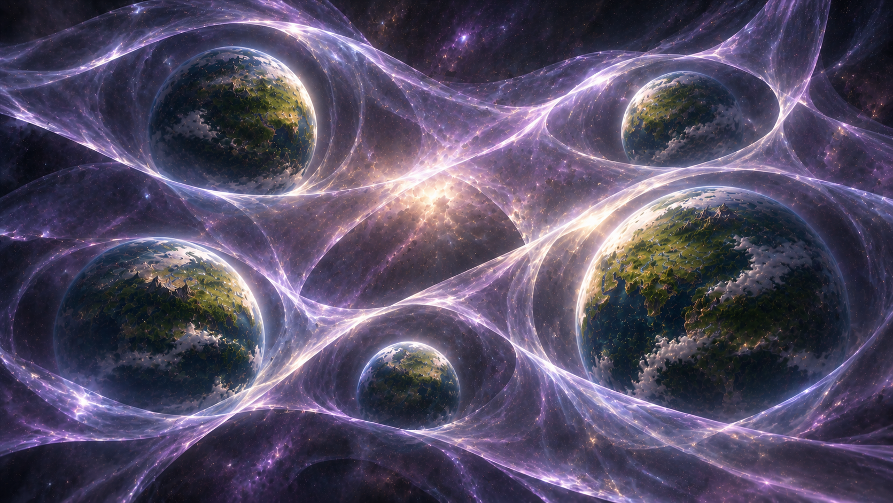
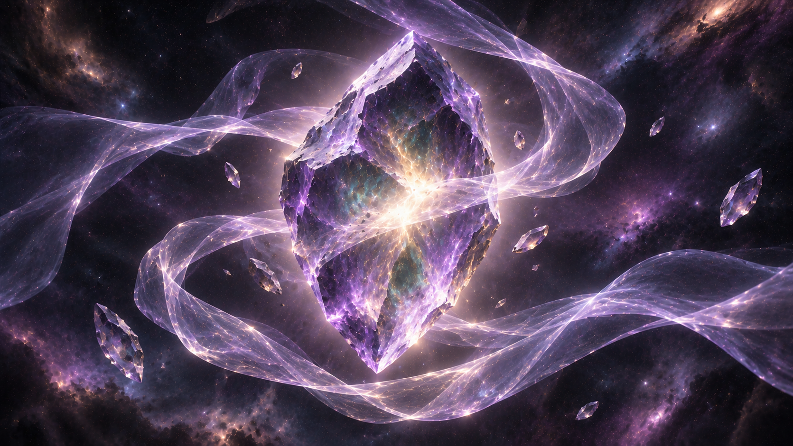

O amadurecimento das consciências
Durante milhões de anos, as almas passaram por diversas formas de vida. Isso proporcionou a elas experiências diversificadas. Ou seja, cada forma de vida contribuía para a formação de um novo ser, baseado em suas próprias experiências.
Cada um deles passou a desenvolver algo que seria o início do que podemos chamar hoje de personalidade e vontade. Não era tão complexo quanto temos atualmente, mas era suficiente para que aquelas formas de consciência tomassem decisões em conjunto.
Com essas decisões, as almas passaram a buscar formas de vida que se encaixassem em suas preferências. Cada evolução possuía suas vantagens e desvantagens, e cada alma buscava aquela que mais combinasse com suas próprias preferências.
A divergência das vontades
Existe um princípio no universo: o Cosmo consciente passa a exercer influência sobre todos os outros Cosmos. Isso acontece porque tudo tem como base a mesma matéria. A diferença está na maneira como essa influência se manifesta. Ela pode ser direta ou indireta, mas as ações e vontades do Cosmo consciente sempre influenciarão o que acontece ao seu redor.
Mas o que acontece quando inúmeros Cosmos conscientes passam a divergir em suas vontades?
O resultado é um verdadeiro colapso. A Grande Pangeia conseguia abrigar todas as almas porque, de maneira geral, todas precisavam das mesmas coisas. Todas buscavam uma forma de evoluir sua consciência ao máximo. Porém, quando chegou o momento em que passaram a buscar coisas diferentes, a Grande Pangeia já não era capaz de fornecer tudo o que desejavam.
O colapso da Célula Primordial
A função da Célula Primordial é atuar como o núcleo responsável por manter tudo funcionando. Essa estrutura é responsável pela criação do mundo e por mantê-lo em equilíbrio. Porém, apesar de sua função importante, ela ainda é formada por Cosmo bruto. Isso significa que continua sujeita à influência do Cosmo consciente.
Quando os Cosmos conscientes passaram a divergir em seus caminhos evolutivos, começaram a se repelir. À medida que novas almas morriam e outras surgiam, as novas consciências já apresentavam tendências diferentes, buscando caminhos evolutivos distintos.
Devido a isso, os grupos de consciências passaram a se afastar fisicamente, levando consigo partes do Cosmo bruto para outras regiões. Esse processo provocou uma divisão gradual do Cosmo.
Com a divisão dos Cosmos, a região onde a Grande Pangeia estava localizada passou a sofrer uma intensa pressão. É semelhante a pegar um tecido e puxar cada uma de suas extremidades em direções opostas. Mesmo que o material seja resistente, se a pressão for suficiente, ele acabará se rompendo.
Foi assim que ocorreu o fim da Grande Pangeia.

O que tudo isso significa?
- As consciências desenvolveram caminhos evolutivos diferentes.
- Consciências com interesses semelhantes começaram a se agrupar.
- Os grupos passaram a se afastar fisicamente.
- Cada grupo levou consigo parte do Cosmo bruto.
- A separação da matéria provocou a ruptura da estrutura que sustentava a Grande Pangeia.
- A Célula Primordial perdeu sua estabilidade e o primeiro mundo foi destruído.
A reação do Cosmo
Mesmo diante do colapso da Grande Pangeia, o Cosmo continuava seguindo seu instinto primordial de buscar estabilidade.
A existência de consciências com vontades divergentes havia demonstrado que manter todas as almas em uma única estrutura poderia provocar novos colapsos. Para impedir que o mesmo acontecimento se repetisse, o Cosmo desenvolveu uma nova forma de organização: o Véu.
Cada grupo de almas passou a influenciar conjuntamente a construção de um novo mundo. Agora separados, novos núcleos de organização, chamados de Células Primordiais, começaram a surgir em cada grupo. Essas células já haviam recebido tudo o que tinha sido desenvolvido anteriormente pela primeira Célula Primordial.
Devido a isso, esses novos mundos foram criados milhares de anos mais rapidamente do que a primeira Pangeia.

O desenvolvimento dos outros mundos
Agora que os mundos estavam em locais diferentes, cada grupo de almas podia explorar a evolução que havia escolhido.
As novas Células Primordiais passaram a recriar com precisão tudo o que existia na Grande Pangeia. Não de maneira exata, mas preservando suas estruturas e funcionalidades. Cada funcionalidade estrutural foi mantida, e cada ser vivo que existia na Pangeia também passou a existir nos novos mundos.
A maior diferença era que, agora, as almas poderiam seguir uma única forma de evolução em cada mundo, evitando atrasos no desenvolvimento de qualquer espécie.
O surgimento do Véu
Após o fim de um mundo e a criação de outros, o Cosmo fez aquilo que sabe fazer de melhor: aprendeu.
Manter Cosmos conscientes com vontades evolutivas diferentes em uma mesma estrutura poderia causar um colapso. Devido a isso, surgiu a necessidade de uma estrutura que garantisse que cada mundo permanecesse isolado dos outros. Assim, todos poderiam evoluir sem a interferência dos demais.
Essa estrutura é chamada de Véu. Basicamente, é um tecido cósmico que envolve todos os mundos, circulando ao redor deles. Ele impede que ocorram interferências entre os diferentes mundos, permitindo que cada um desenvolva sua própria estabilidade.

Nós do Véu ou Pedras do Véu
Durante a formação do Véu, ocorreram algumas falhas que foram chamadas de Nós do Véu. Como o próprio nome sugere, esses nós foram formados durante a criação da estrutura.
Durante o processo, essas falhas foram repelidas da estrutura, mas acabaram sendo lançadas aleatoriamente pelos diferentes mundos. Elas adquiriram uma forma visível semelhante à de pedras preciosas, motivo pelo qual muitas pessoas também as chamam de Pedras do Véu.
São objetos raríssimos que possuem uma função extraordinária: permitem o teletransporte entre todos os mundos e também dentro do próprio mundo em que se encontram.

Como funciona?
- A pessoa segura o objeto e pensa no lugar para onde deseja ir.
- A Pedra do Véu recebe a influência da pessoa.
- A pedra utiliza sua ligação residual com o Véu para encontrar o destino.
- Então, transporta a pessoa instantaneamente para o local mais próximo possível do destino desejado.